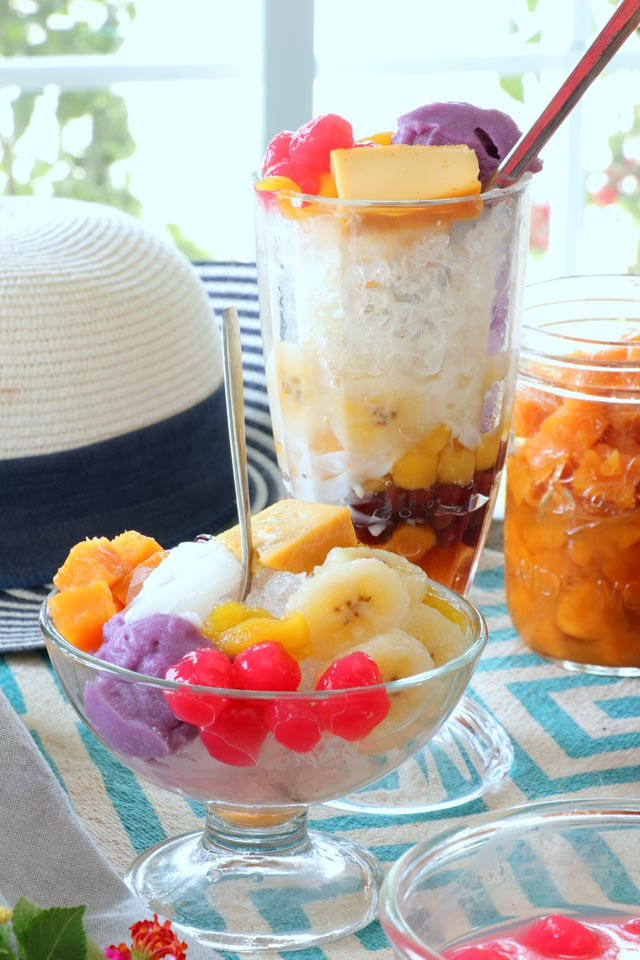

Filipino Halo-Halo, which translates to "mix-mix" in English, is a delightful and colorful dessert that reflects the vibrant and diverse flavors of Filipino cuisine. It is a popular summertime treat known for its refreshing qualities, making it a favorite among locals and visitors alike. Halo-Halo is a medley of various ingredients, typically served in a tall glass or bowl, layered with sweet treats and toppings, creating a symphony of flavors and textures.
The base of Halo-Halo usually consists of shaved ice, which is generously topped with a variety of ingredients such as sweetened beans (red beans, chickpeas, or kidney beans), jackfruit, sweet potato, sago (tapioca pearls), gulaman (gelatin cubes), and coconut sport (macapuno). Additional toppings often include slices of ripe mango, avocado, or banana, as well as a scoop of creamy leche flan or ube halaya (purple yam jam). To complete this indulgent dessert, it is drizzled with evaporated milk or condensed milk, adding a creamy sweetness that ties all the flavors together. With its colorful presentation and delightful mix of flavors and textures, Filipino Halo-Halo is a beloved dessert that embodies the joy and richness of Filipino culinary culture.